Теоретический минимум за 10 класс
2-e полугодие
Равномерное движение
1. Средняя скорость
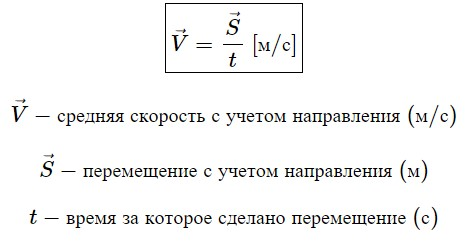
2. Средне путевая скорость
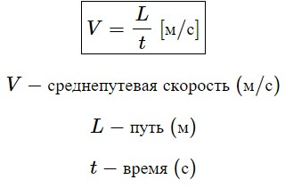
3. Зависимость координат от времени при равномерном движении
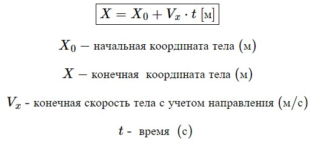
Равноускоренное движение
4. Ускорение
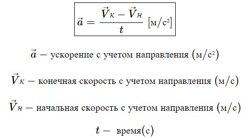
5. Зависимость координат от времени
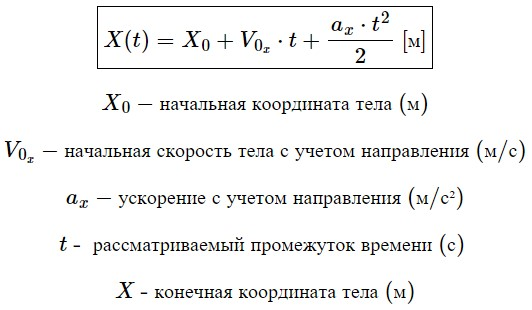
6. Зависимость скорости от времени
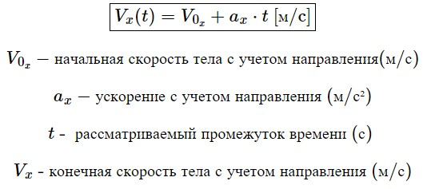
7. Формула перемещения без времени
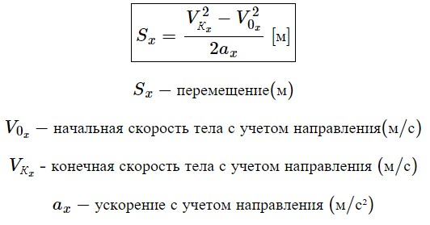
8. Формула перемещения без ускорения
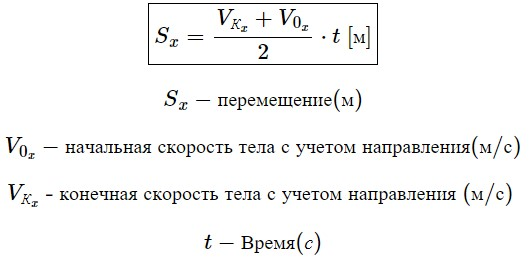
Равномерное движение по окружности
9. Угловая скорость
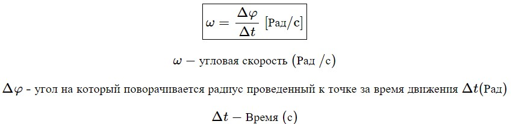
10. Связь между линейной и угловой скоростью
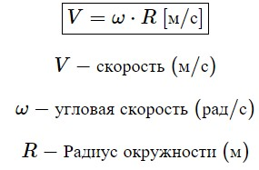
11. Связь центростремительного ускорения и угловой скорости
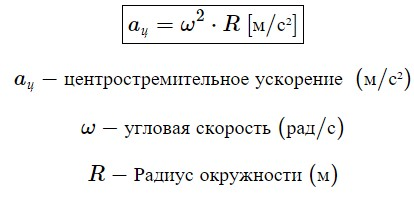
Динамика
12. Второй закон Ньютона
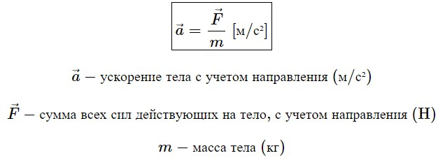
13. Третий закон Ньютона (формулировка)
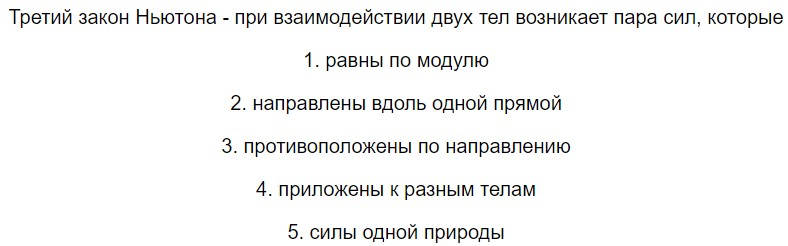
14. Сила тяжести
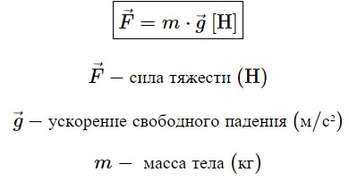
15. Сила упругости
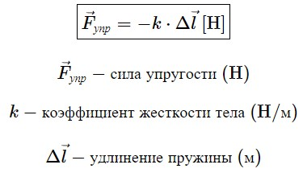
16. Сила трения
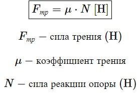
17. Закон всемирного тяготения
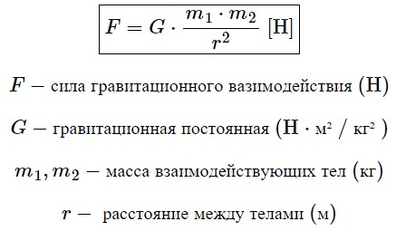
18. Сила Архимеда
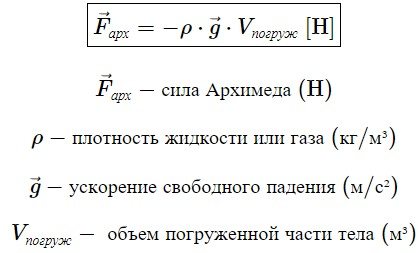
Законы сохранения
19. Работа
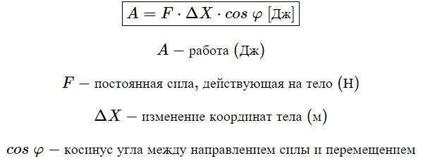
20. Мощность
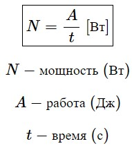
21. Кинетическая энергия
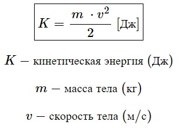
22. Потенциальная энергия вблизи поверхности Земли
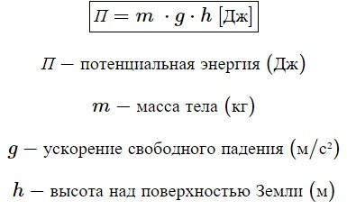
23. Потенциальная энергия сжатой пружины
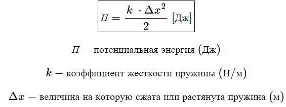
24. Потенциальная энергия вблизи поверхности Земли
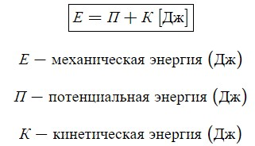
25. Связь между механической энергией и работой
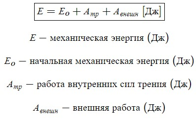
26. Закон сохранения энергии (формулировка)
Закон сохранения энергии – суммарная энергия системы не меняется в процессе взаимодействия, если система замкнута.
27. Импульс
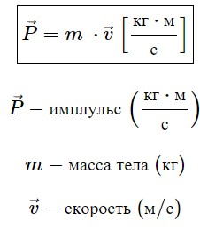
28. Второй закон Ньютона в импульсной форме
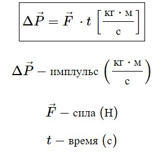
29. Закон сохранения импульса (формулировка)
Закон сохранения импульса – суммарный импульс системы сохраняется при любых взаимодействиях, если система замкнута.
Статика
30. Момент силы
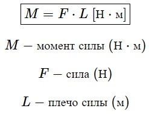
31. Условия равновесия протяжённого твёрдого тела
1) Векторная сумма всех сил, действующих на тело, равна 0.
2) Сумма всех моментов, закручивающих рычаг по часовой стрелке, равна сумме всех моментов, закручивающих рычаг против часовой стрелке.
32. Давление
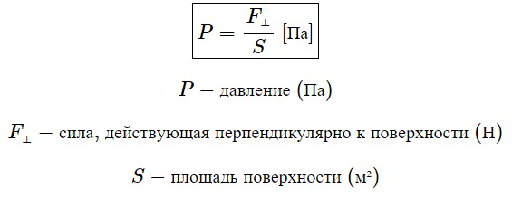
33. Давление столба жидкости (формула с пояснениями)
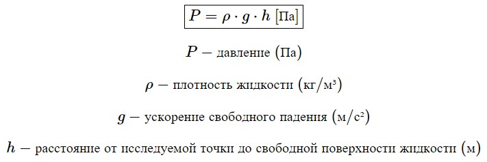
Колебания
34. Период колебаний математического маятника
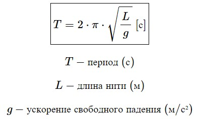
35. Период колебания пружинного маятника
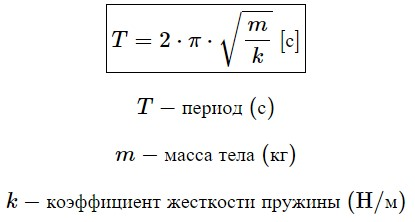
36. Длина волны (формулировка)
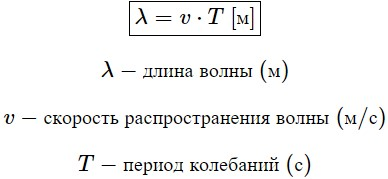
МКТ
37. Основное уравнение МКТ (формула с пояснениями)
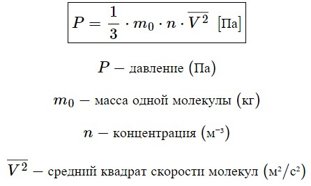
38. Среднеквадратичная скорость
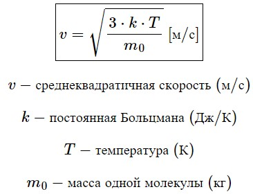
Термодинамика
39. Уравнение Клапейрона – Менделеева
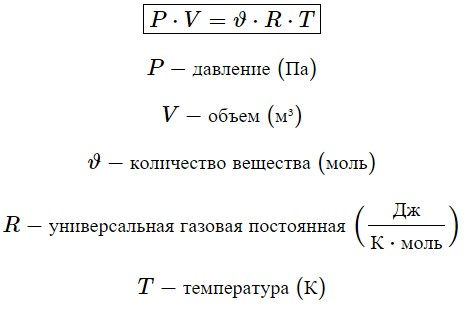
40. Закон Дальтона
Закон Дальтона – давление смеси газов равно сумме парциальных давлений каждого газа в составе смеси.
41. I начало термодинамики (формула с пояснениями)

42. Формула для расчёта теплоты в процессе:
А) Нагревания
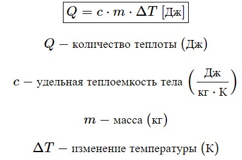
Б) Плавления
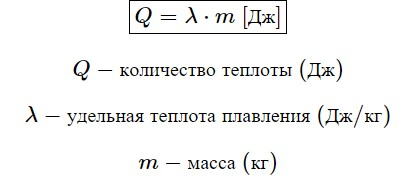
В) Парообразования
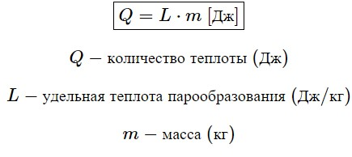
Г) Горения
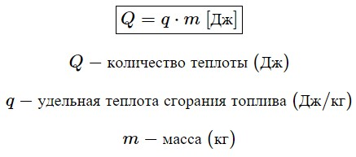
43. Относительная влажность
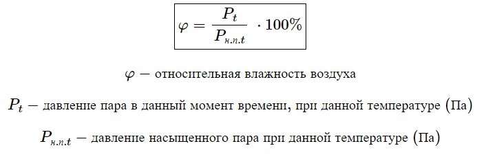
44. Внутренняя энергия идеального газа
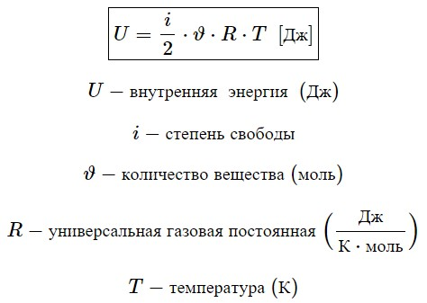
45. Работа идеального газа при изобарном процессе
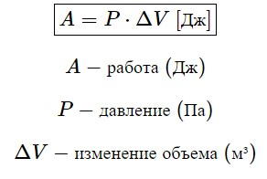
46. Работа в произвольном процессе
это площадь под графиком в координатах P, V
47. К.П.Д. тепловой машины (формула с пояснениями)
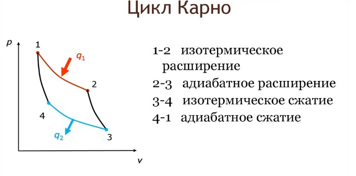
48. К.П.Д. цикла Карно
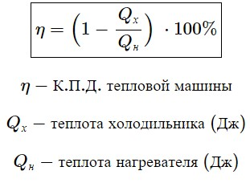
Электростатика
50. Закон Кулона
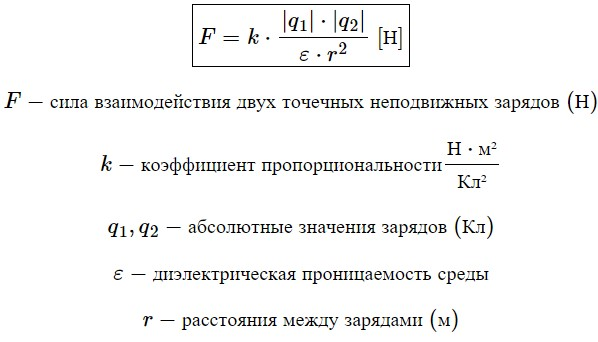
51. Напряжённость электрического поля
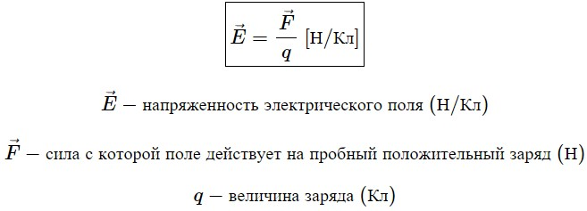
52. Напряжённость электрического поля точечного заряда
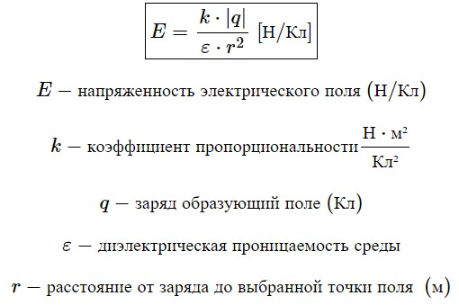
53. Потенциал
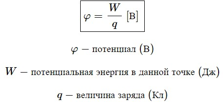
54. Потенциал поля точечного заряда
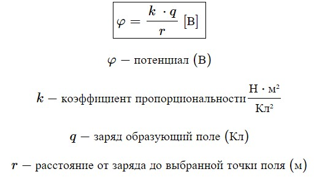
55. Энергия взаимодействия двух точечных зарядов

56. Ёмкость уединённого проводника